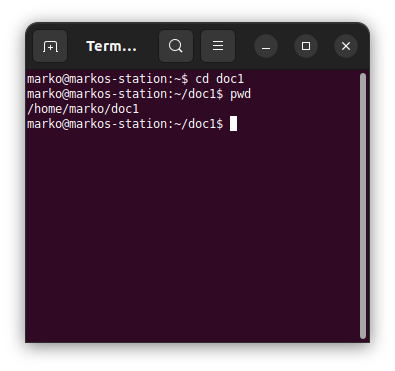

pwd
Štampa na ekranu apsolutnu putanju direktorijuma u kom se trenutno
nalazite. Lokacija fajla ili direktorijuma se naziva putanja. Ako imamo direktorijum koji se zove home i koji sadrži poddirektorijum marko koji u sebi ima doc1, onda je putanja do tog direktorijuma
/home/marko/doc1.
